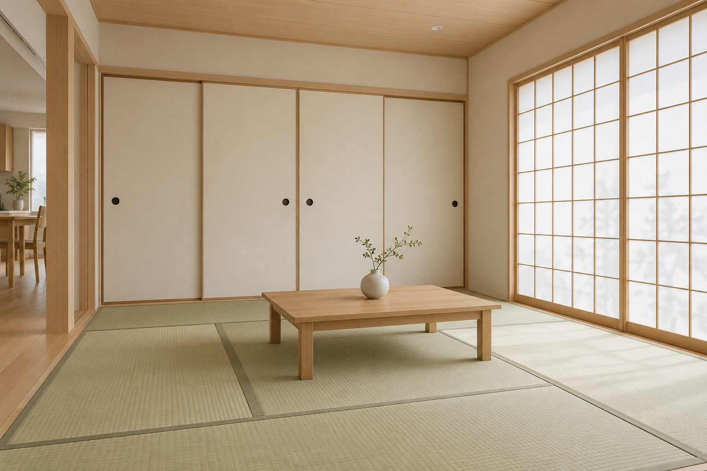

施工イメージ
施工イメージ会話を楽しむ、落ち着いた居場所。
響き方や隣接する部屋との関係に配慮する、穏やかなリビングのコンセプト。
01 / OUR APPROACH
大切にしていること
どこから、いつ、どんな音が聞こえるか。気になる状況を丁寧に伺い、対策の方向を整理します。
壁や床だけでなく、開口部や隙間も確認。現地の構造や条件に合わせて工法を検討します。
音への配慮と、明るさや換気、部屋の使いやすさ。暮らし全体の快適さを大切にします。
02 / CONCEPT WORKS
施工事例
暮らしを想像する、2つの空間。
架空企業のデモのため、掲載内容は施工イメージです。生成画像を使用しており、実際の施工実績ではありません。
施工イメージ響き方や隣接する部屋との関係に配慮する、穏やかなリビングのコンセプト。

施工イメージ用途に合わせて音環境を考える、落ち着いた小部屋のコンセプト。
防音の効果は、建物の構造・音の種類・現地条件によって異なります。掲載画像は防音性能を示すものではありません。